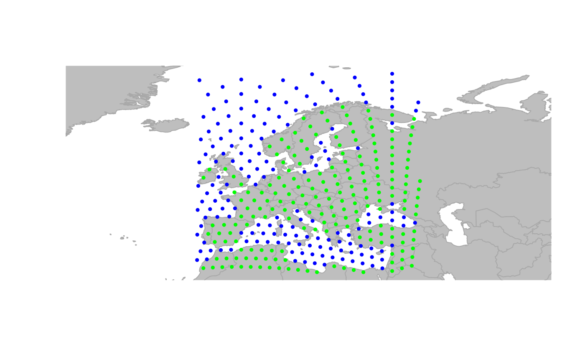
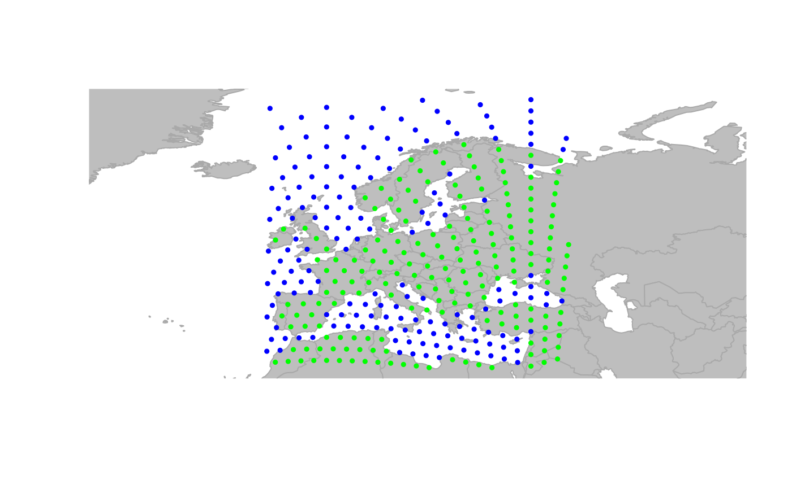

Find which nodes fall in a given area
isInArea.RdThe generic function isInArea finds which nodes fall in a given area.
Nodes can be specified in different ways, including by providing a
gGraph or a gData object. Different format for
the output are also available.
Usage
isInArea(x, ...)
# S4 method for matrix
isInArea(
x,
reg = "current",
res.type = c("logical", "integer", "character"),
buffer = 0
)
# S4 method for data.frame
isInArea(
x,
reg = "current",
res.type = c("logical", "integer", "character"),
buffer = 0
)
# S4 method for gGraph
isInArea(
x,
reg = "current",
res.type = c("logical", "integer", "character"),
buffer = 0
)
# S4 method for gData
isInArea(
x,
reg = "current",
res.type = c("logical", "integer", "character"),
buffer = 0
)Arguments
- x
a matrix, a data.frame, a valid gGraph, or a valid gData object. For matrix and data.frame, input must have two columns giving longitudes and latitudes of locations being considered.
- ...
further arguments passed to specific methods.
- reg
a character string or a list indicating the area ('reg' stands for 'region'). Character strings can be "current" (current user window, default) or "zoom" (current zoom). If the argument is a list, is has to have two components, both being numeric vectors of length two, giving x and y limits of the area. Note that such list can be produced by
locator, solocator(1)is a valid value forreg.- res.type
a character string indicating what kind of output should be produced. See value.
- buffer
a numeric value giving a buffer adding extra space aroung the area, as a proportion of current area's dimensions.
Value
The output depends on the value of the argument res.type:
logical: a vector of logicals having one value for each node of the input.integer: a vector of integers corresponding to the indices of nodes falling within the area.character: a vector of characters corresponding to the names of the nodes falling within the area.
Functions
isInArea(matrix): Method for matrixisInArea(data.frame): Method for data.frameisInArea(gGraph): Method for gGraph objectisInArea(gData): Method for gData object
Author
Thibaut Jombart (t.jombart@imperial.ac.uk)
Examples
plot(worldgraph.10k, reset = TRUE)
 ## zooming in
geo.zoomin(list(x = c(-6, 38), y = c(35, 73)))
title("Europe")
## zooming in
geo.zoomin(list(x = c(-6, 38), y = c(35, 73)))
title("Europe")
 ## different outputs of isInArea
head(isInArea(worldgraph.10k)) # logical
#> 1 2 3 4 5 6
#> FALSE FALSE FALSE FALSE FALSE FALSE
length(isInArea(worldgraph.10k))
#> [1] 10242
sum(isInArea(worldgraph.10k))
#> [1] 359
head(which(isInArea(worldgraph.10k))) # which nodes are TRUE ?
#> 707 1027 1028 1347 1348 1667
#> 707 1027 1028 1347 1348 1667
head(isInArea(worldgraph.10k, res.type = "integer")) # node indices
#> 707 1027 1028 1347 1348 1667
#> 707 1027 1028 1347 1348 1667
head(isInArea(worldgraph.10k, res.type = "character")) # node names
#> [1] "707" "1027" "1028" "1347" "1348" "1667"
## use isInArea to have a subset of visible nodes
x <- worldgraph.10k[isInArea(worldgraph.10k)]
plot(x, reset = TRUE)

## different outputs of isInArea
head(isInArea(worldgraph.10k)) # logical
#> 1 2 3 4 5 6
#> FALSE FALSE FALSE FALSE FALSE FALSE
length(isInArea(worldgraph.10k))
#> [1] 10242
sum(isInArea(worldgraph.10k))
#> [1] 359
head(which(isInArea(worldgraph.10k))) # which nodes are TRUE ?
#> 707 1027 1028 1347 1348 1667
#> 707 1027 1028 1347 1348 1667
head(isInArea(worldgraph.10k, res.type = "integer")) # node indices
#> 707 1027 1028 1347 1348 1667
#> 707 1027 1028 1347 1348 1667
head(isInArea(worldgraph.10k, res.type = "character")) # node names
#> [1] "707" "1027" "1028" "1347" "1348" "1667"
## use isInArea to have a subset of visible nodes
x <- worldgraph.10k[isInArea(worldgraph.10k)]
plot(x, reset = TRUE)
